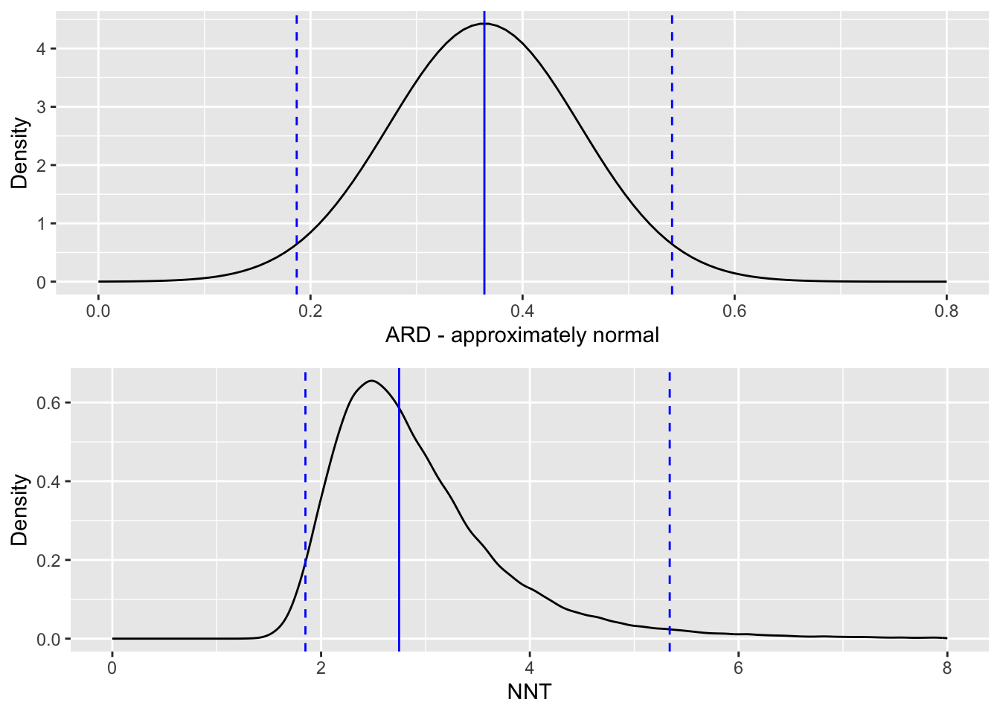
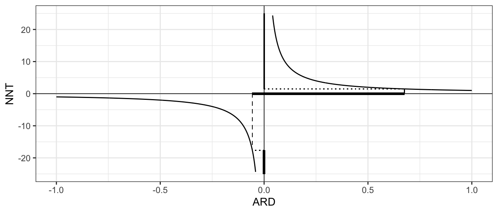
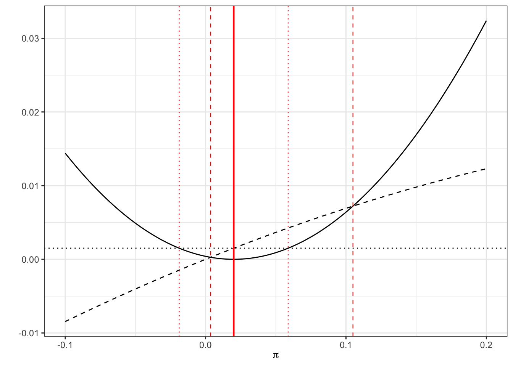
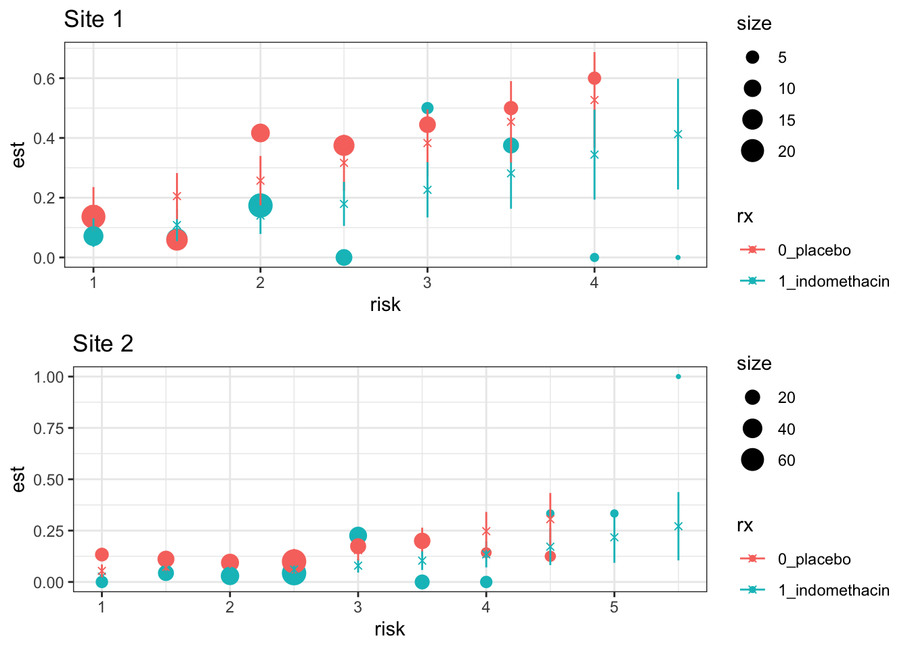

6 (Lecture 11) Analysis for binary outcomes
For a group of \(n\) participants, we will have allocated \(n_C\) to the control group (group \(C\)), and \(n_T\) to the treatment group (group \(T\)).
Natural to model number of ‘successes’ \(R_C\) by
\[R_C \sim \operatorname{Bi}\left(n_C,\,\pi_C\right).\]
Similarly the number of successes in the treatment group can be modelled as \[R_T \sim\operatorname{Bi}\left(n_T,\,\pi_T\right),\] and the focus of our analysis is on comparing \(\pi_C\) and \(\pi_T\).
To do this we need
- point estimates of \(\pi_C\) and \(\pi_T\)
- interval estimates for some measure of the discrepancy between them
- ways to test \(H_0:\;\pi_C = \pi_T.\)
6.1 Point estimates and Hypothesis tests
First of all, we can tabulate the results of a trial with a binary outcome like this:
| Successes | Failures | Total | |
|---|---|---|---|
| Treatment | \(r_T\) | \(n_T-r_T\) | \(n_T\) |
| Control | \(r_C\) | \(n_C-r_C\) | \(n_C\) |
| Total | \(r\) | \(n - r\) | \(n\) |
Note that because this is a table of observed values, they are now all in lower case.
We can estimate \(\pi_C\) and \(\pi_T\) by the sample proportions
\[ \begin{aligned} p_C &= \frac{r_C}{n_C}\\ p_T &= \frac{r_T}{n_T} \end{aligned}. \]
We know that \[\operatorname{E}\left(p_C\right) = \pi_C\] and \[\operatorname{Var}\left(p_C\right) = \frac{\pi_C\left(1-\pi_C\right)}{n_C},\] and similarly for \(\operatorname{E}\left(p_T\right)\) and \(\operatorname{Var}\left(p_T\right)\).
If \(Y_{iC}\) is the outcome of the \(i\)-th patient in group \(C\), with
- \(Y_{iC}=1\) if the participant’s outcome is ‘success’
- \(Y_{iC}=0\) otherwise.
Then we have
\[r_C = \sum\limits_{i=1}^{n_C} y_{iC},\] and similarly for group \(T\).
Since \(p_C\) and \(p_T\) are therefore sample means, the Central Limit Theorem \(\implies\) \(p_C\) and \(p_P\) can be approximated by normal distributions:
\[ \begin{aligned} p_C & \sim N\left(\pi_C,\, \frac{\pi_C\left(1-\pi_c\right)}{n_C}\right)\\ p_T & \sim N\left(\pi_T,\, \frac{\pi_T\left(1-\pi_T\right)}{n_T}\right). \end{aligned} \]
This means we can test the null hypothesis that \(\pi_C = \pi_T\) by referring our observed value of \(p_T - p_C\) to a normal distribution with mean 0 and variance
\[ \frac{\pi_T\left(1-\pi_T\right)}{n_T} + \frac{\pi_C\left(1-\pi_c\right)}{n_C},\]
which we can approximate by substituting in \(p_C\) and \(p_T\).
Under \(H_0\), \(\pi_C = \pi_T = \pi\), so it would be more appropriate to use this as the common variance.
The variance of \(p_T - p_C\) becomes
\[\pi\left(1-\pi\right)\left(\frac{1}{n_C} + \frac{1}{n_T}\right), \] and in calculations we replace \(\pi\) with \(p = r/n\).
Putting all this together, our test statistic is
\[Z = \frac{p_T - p_C}{\sqrt{p\left(1-p\right)\left(\frac{1}{n_T} + \frac{1}{n_C}\right)}}.\]
Example 6.1 From al (1948).
- 109 patients with tuberculosis
- Assigned to either receive Streptomycin (group \(T\)), or placebo (group \(C\))
- Primary outcome variable is whether or not the patient was improved after the treatment period.
The data include several other covariates, including gender, baseline condition (good, fair or poor) and whether the patient had developed resistance to streptomycin after 6 months.
## improved
## arm FALSE TRUE
## Streptomycin 17 38
## Control 35 17We therefore have
\[ \begin{aligned} n_C & = 52 \\ n_T & = 55 \\ p_C & = \frac{17}{17+35} & = 0.327\\ p_T & = \frac{38}{38+17} & = 0.691\\ p & = \frac{38+17}{107} &= 0.514. \end{aligned} \] and can calculate our \(Z\) statistic to be
\[ \begin{aligned} Z & = \frac{0.691 - 0.327}{\sqrt{0.514\left(1-0.514\right)\left(\frac{1}{52} + \frac{1}{55}\right)}}\\ & = 3.765. \end{aligned} \]
Finally, we can find the \(p\)-value of this test statistic (making sure to have two tails!)
## [1] 0.0001665491So we can reject the hypothesis that streptomycin has no effect on tuberculosis at the \(\alpha=0.05\) level (and indeed many lower levels).
6.1.1 An alternative approach: chi-squared
Another way to approach this would be to conduct a chi-squared test.
- Calculate the expected values \(\left(E_i\right)\) for each box of the summary table
- Compare them to the observed values \(\left(O_i\right)\) by finding the summary statistic
\[ X^2 = \sum \frac{\left(o_i - e_i\right)^2}{e_i}.\]
Under \(H_0:\; \pi_C = \pi_T\), the test statistic \(X^2 \sim \chi^2_1\).
We see that the larger the differences between the observed and expected values, relative to the expected values, the larger the test statistic, and therefore the less probably under the \(\chi^2_1\) distribution.
Example 6.2 Continuing our streptomycin example, we can calculate a table of expected values by observing that proportion \(p=0.514\) of the total number of patients were improved. There are 52 in the control group, therefore we expect \(0.514\times 52 = 26.73\) improved patients in the control group, and by the same logic \(0.514\times 55 = 28.27\) in the treatment group. Our expected table is therefore
## improved
## arm FALSE TRUE
## Streptomycin 26.730 28.270
## Control 25.272 26.728We can therefore calculate the \(\chi^2\) statistic by looping through the elements of the tables:
sum_chi_sq = 0 # set a running total going
# in the following, tab_obs is the table of observed values and
# tab_exp is the table of expected values
for (i in 1:2){
for (j in 1:2){
tmp = ((tab_obs[i,j] - tab_exp[i,j])^2)/tab_exp[i,j]
sum_chi_sq = sum_chi_sq + tmp
}
}
sum_chi_sq## [1] 14.17595## [1] 0.0001664847and again we have a very significant result.
In fact, these two tests are almost equivalent, and we have that \(\sqrt{X^2} = Z\):
## [1] 3.7650976.1.2 (Lecture 11) Likelihood: A more rigorous way
Our method above was quite informal, and also made heavy use of the central limit theorem. We can use maximum likelhood to derive a more formally justified test for binary outcomes. This also lays a good foundation for more complex situations.
Using same notation \(y_{iC}\) to be outcome variable (0 or 1, in this case) of the \(i\)-th participant in the control group (and so on).
The contribution of the \(i\)-th patient in group \(C\) to the likelihood is
\[\pi_C^{y_{iC}}\left(1 - \pi_C\right)^{y_{iC}} \] (remember we can ignore multiplicative constant terms). Combining all \(n_C\) patients in group \(C\), their contribution will be
\[ \pi_C^{r_C}\left(1-\pi_C\right)^{n_C - r_C},\] where \(r_C\) is the number of ‘successes’ in group \(C\). Similarly for the treatment group we will have
\[ \pi_T^{r_T}\left(1-\pi_T\right)^{n_T - r_T}.\] Wwe can find the complete likelihood function
\[ \begin{aligned} L\left(\pi_C,\pi_T \mid \left\lbrace y_{iC}\right\rbrace, \left\lbrace y_{iT}\right\rbrace \right) & L\left( \pi_C,\pi_T \mid {n_C,n_T, r_C, r_T}\right)\\ & = \pi_C^{r_C}\left(1-\pi_C\right)^{n_C - r_C}\pi_T^{r_T}\left(1-\pi_T\right)^{n_T - r_T}. \end{aligned} \] The log-likelihood is therefore
\[ l\left( \pi_C,\pi_T \mid {n_C,n_T, r_C, r_T}\right) = r_C\log\pi_C + \left(n_C-r_C\right)\log\left(1-\pi_C\right) + r_T\log\pi_T + \left(n_T-r_T\right)\log\left(1-\pi_T\right).\] If we differentiate with respect to \(\pi_C\), we find
\[\frac{\mathrm{d} l\left( \pi_C,\pi_T \mid {n_C,n_T, r_C, r_T}\right)}{\mathrm{d}\pi_C} = \frac{r_C}{\pi_C} - \frac{n_C-r_C}{1-\pi_C}.\] Setting this to zero we find (reassuringly!) that \(\hat\pi_C = \frac{r_C}{n_C}\). We can repeat this exercise for \(\pi_T\). If we assume that there is one common probability \(\pi\) of success, we can find \(\hat\pi\) by maximising \(l\left(\pi,\pi \mid {n_C,n_T, r_C, r_T}\right)\) with respect to \(\pi\), and again this works out to be \(\frac{r_{C} + r_T}{n}\) as before.
We can use these to construct a likelihood ratio test, by calculating
\[ \begin{aligned} \lambda_{LR} = & -2\left[l\left( \hat\pi,\hat\pi \mid {n_C,n_T, r_C, r_T}\right) - l\left( \hat\pi_C,\hat\pi_T \mid {n_C,n_T, r_C, r_T}\right)\right]\\ = & 2\left[\underbrace{r_C\log\frac{r_C}{n_C} + \left(n_C-r_C\right)\log\left(1-\frac{r_C}{n_C}\right) + r_T\log\frac{r_T}{n_T} + \left(n_T-r_T\right)\log\left(1-\frac{r_T}{n_T}\right) }_{l\left( \hat\pi_C,\hat\pi_T \mid {n_C,n_T, r_C, r_T}\right)} \right. \\ &\;\;\;\;\;\; \left. - \underbrace{\Big(r\log\left(p\right) + \left(n-r\right)\log\left(1-p\right)\Big)}_{l\left( \hat\pi,\hat\pi \mid {n_C,n_T, r_C, r_T}\right)}\right]\\ =& 2\left[\underbrace{r_C \log\left(\frac{r_C}{n_C p}\right)}_{\text{Group }C\text{ success}} + \underbrace{\left(n_C - r_C\right)\log\left(\frac{n_C - r_C}{n_C\left(1-p\right)}\right)}_{\text{Group }C\text{ fail}} \right.\\ & \;\;\;\;\;\; \left.+ \underbrace{r_T \log\left(\frac{r_T}{n_T p}\right)}_{\text{Group }T\text{ success}} + \underbrace{\left(n_T - r_T\right)\log\left(\frac{n_T - r_T}{n_T\left(1-p\right)}\right)}_{\text{Group }T\text{ fail}}\right] \end{aligned} \] where we use \(p,\, r,\, n\) to denote the pooled values (\(n = n_C + n_T\) etc.).
Each term in the final line corresponds to a subgroup of the participants, as labelled, and if we rearrange them slightly we see that
This can be re-written as
\[\lambda_{LR} = 2 \sum\limits_{i\in G} o_i \log\left(\frac{o_i}{e_i}\right),\] where \(G\) is the set of subgroups (group \(C\) success etc.).
Under the null hypothesis that \(\pi_C = \pi_T = \pi\), and for sufficiently large \(n_C,\;n_T\), \(\lambda_{LR}\) has a \(\chi^2\) distribution with one degree of freedom.
Example 6.3 Continuing with the streptomycin example, we can calculate this new test statistic in R by looping through the subgroups.
sum_LR = 0 # set a running total going
# in the following, tab_obs is the table of observed values and
# tab_exp is the table of expected values
for (i in 1:2){
for (j in 1:2){
tmp = tab_obs[i,j] * log(tab_obs[i,j]/tab_exp[i,j])
sum_LR = sum_LR + tmp
}
}
teststat_LR = 2*sum_LR
teststat_LR## [1] 14.5028## [1] 0.0001399516Not surprisingly, this value is quite close to the one we obtained earlier!
Having thought about tests for one proportion, we now move on to thinking how we might compare proportions.
Brief overview of the different measure’s we’ll be looking at:
Absolute risk difference (ARD): \(\pi_T - \pi_C\)
Number needed to treat (NNT): \(\frac{1}{\text{ARD}} = \frac{1}{\pi_T - \pi_C}\)
Risk ratio (RR): \(\frac{\pi_T}{\pi_C}\)
Odds Ratio (OR): \(\frac{\pi_T/ \left(1-\pi_T\right)}{\pi_C/ \left(1-\pi_C\right)}\)
6.2 (Lecture 12) Measures of difference for binary data
Important note: treating \(\pi_T>\pi_C\) as good
Our question in the last lecture was ‘is what we’ve observed statistically significant?’ For streptomycin example the answer was a resounding ‘Yes!’.
However, for questions like
- ‘How big is the difference between the effects of each treatment?’
- ‘What is the treatment effect?’
things are a bit less clear.
For continuous \(X\), it made sense to think about the treatment effect as \(\mu_T - \mu_C\).
In the binary case there are several ways we can think of the difference between two proportions \(\pi_C\) and \(\pi_T\).
Each requires a different approach, so we will work our way through them in the next couple of lectures.
6.2.1 Absolute risk difference and Number Needed to Treat
The absolute risk difference is
\[\text{ARD} = \pi_T - \pi_C,\] and is sometimes used. Loses a lot of information that we’d like to keep in: a change from \(\pi_C=0.03\) to \(\pi_T=0.01\) is very different from \(\pi_C=0.57\) to \(\pi_T = 0.55\).
Eg., suppose a treatment reduces the incidence of some terrible symptom from \(\pi_C=0.03\) to \(\pi_T=0.01\). The absolute risk difference is \(0.02\) here. For some other treatment that results in a reduction from \(\pi_C=0.57\) to \(\pi_T = 0.55\) we have the same absolute risk difference, even though it feels (and is!) a much less significant reduction.
BUT these numbers are (usually) about people. If the outcome is ‘cured’ or ‘not cured’, then for \(N\) patients, \(N\times\text{ARD}\) is the number of extra patients you would expect to cure if you used treatment \(T\) instead of treatment \(C\) (which may be nothing or may some usual course of treatment).
Linked to this is the number needed to treat (NNT), which is defined as
\[ \text{NNT} = \frac{1}{\pi_T - \pi_C} = \frac{1}{\text{ARD}}. \] The NNT is the number of patients you’d need to treat (with treatment \(T\) rather than \(C\)) before you would bring benefit to one extra patient.
The website TheNNT collects together results from many clinical trials and uses the NNT as a summary. Some of the results are quite surprising, compared to how effective we think medicines are!
- Popular as a clinical benchmark
- Provides useful intuition in terms of the number of people it will help
Eg. \(\pi_T = 0.25,\,\pi_C=0.2\), then \(\text{ARD} = 0.05\) and \(\text{NNT} = 20.\)
After treating 20 patients with treatment \(C\) we expect to cure (say) 4, whereas treating 20 patients with treatment \(T\) it is expected that we will cure 5.
For very small proportions, the NNT can be large even for what appears to be an important difference. For example, if \(\pi_C=0.005\) and \(\pi_T = 0.015\) then \(\text{ARD}=0.01\) and \(\text{NNT}=100\).
It might be decided that the necessary changes and costs are not worth it for such a small difference.
That said, the NNT is not the easiest statistic to work with, as we shall see!
6.2.1.1 Confidence intervals for ARD and NNT
Let’s make a confidence interval for the treatment difference \(\tau_{ARD} = \pi_T - \pi_C\).
Using the same normal approximation as before, we can estimate \(\tau_{ARD}\) by \(p_T - p_C\), and \(\operatorname{var}\left(p_T - p_C\right)\) by
\[ \frac{p_T\left(1-p_T\right)}{n_T} + \frac{p_C\left(1-p_C\right)}{n_C}.\] Our \(100\left(1-\alpha\right)\)% confidence interval is therefore given by
\[\left(p_T - p_C - z_{\frac{\alpha}{2}}\sqrt{\frac{p_T\left(1-p_T\right)}{n_T} + \frac{p_C\left(1-p_C\right)}{n_C}},\; p_T - p_C + z_{\frac{\alpha}{2}}\sqrt{\frac{p_T\left(1-p_T\right)}{n_T} + \frac{p_C\left(1-p_C\right)}{n_C}}\right) \]
Example 6.4 Back to our streptomycin example, we can now construct a \(100\left(1-\alpha\right)\)% confidence interval for the ARD.
Our estimated treatment effect is (to 3 decimal places)
\[\hat\tau=p_T - p_C = \frac{38}{55} - \frac{17}{52} = 0.364.\] Our estimate of the standard error of \(\hat\tau\) is
\[ \begin{aligned} \frac{p_T\left(1-p_T\right)}{n_T} + \frac{p_C\left(1-p_C\right)}{n_C} & = \frac{\frac{38}{55}\times \frac{17}{55}}{55} + \frac{\frac{17}{52}\times \frac{35}{52}}{52}\\ & = 0.0811 \end{aligned} \] and therefore a 95% confidence interval for \(\tau_{ARD}\) is
\[\left(0.364 - z_{0.975}\sqrt{0.0811},\; 0.364 + z_{0.975}\sqrt{0.0811}\right) = \left(0.187,\; 0.541\right). \] As we should expect from the very low \(p\)-value we saw, the 95% confidence interval does not contain zero.
Our expected value of \(\tau_{NNT}\) is
\[ \text{NNT} = \frac{1}{\tau_{ARD}} = \frac{1}{0.364} = 2.75.\] That is, we would expect to treat three patients before one is improved (in terms of their tuberculosis symptoms).
We can use the limits of the 95% CI for \(\tau_{ARD}\) to form a 95% CI for NNT: simply by taking the reciprocals of the limits to get
\[\left(\frac{1}{0.541},\; \frac{1}{0.178}\right) = \left(1.85,\; 5.34 \right).\]
Because the NNT is the reciprocal of something approximately normally distributed, it has a distribution with a long tail, and we see that the confidence interval is therefore skewed.

6.2.1.2 What if the difference is not significant?
In the above section you might have already wondered what happens if the confidence interval for the absolute risk difference (ARD) contains zero.
To illustrate this, we will make up some data for a small trial:
| Successes | Failures | Total | |
|---|---|---|---|
| Treatment | 9 | 5 | 14 |
| Control | 4 | 8 | 12 |
| Total | 13 | 13 | 26 |
The ARD is now \[\frac{9}{14} - \frac{4}{12} = \frac{3}{13} \approx 0.310 \] and our 95% confidence interval for \(\tau_{ARD}\) is \(\left(-0.0567,\;0.676\right)\).
Our CI is very wide (this is not a very good trial!), and now contains zero.
It looks very likely that the treatment is effective (the interval only just contains zero) but how many patients might we need to treat before we expect to see an extra success?
The expected value of NNT is
\[ \frac{1}{0.310} = 3.23,\]
which is fine.
However, our CI contains the possibility that \(\tau_{ARD}=0\), in which case the NNT is in some sense infinite:
no matter how many patients we treat, we don’t expect to see any extra improvements.
Therefore, it feels appropriate that our CI for \(\tau_{NNT}\) should contain infinity.
When thinking about a confidence interval for the NNT, we need to think about signs, and what negative and positive values mean.
- If both the lower and upper limits of the confidence interval for ARD are positive, there is no issue - the treatment is effective, and our NNT confidence interval is another entirely positive interval.
- If the confidence interval for ARD is entirely negative, we have an entirely negative interval for NNT. A negative value of NNT can be thought of as the ‘number needed to treat to harm one extra person’.
The tricky situation is when the CI for \(\tau_{ARD}\) is \(\left(-L, U\right)\) with \(L,U>0\), ie. an interval containing zero.
As we approach zero from \(U\), the upper limit of the CI for \(\pi_T - \pi_C\), the number of patients we need to treat increases, since the treatment effect is getting smaller, until at \(\pi_T - \pi_C=0\) the NNT is infinite. Therefore, the part of the CI for NNT corresponding to the positive part of the CI for ARD is
\[\left(\frac{1}{U},\; \infty\right)\]
As we approach zero from the left in the interval (ie. from \(-L\)), we need to treat more and more patients to harm one more. In this region the NNT is negative, since if we deny some patients the treatment we will benefit a few.
Therefore the CI for \(\tau_{NNT}\) corresponding to the negative part of the CI for \(\tau_{ARD}\) is
\[\left(-\infty,\;-\frac{1}{L}\right), \] and altogether the confidence interval for the number needed to treat (NNT) is the union of these two intervals,
\[\left(-\infty,\;-\frac{1}{L}\right) \cup \left(\frac{1}{U},\; \infty\right).\]
The plot below shows relationship between ARD and NNT, with the intervals for our toy example shown in bold on the respective axis (the NNT interval should continue infinitely in both directions so for obvious reasons this is not all shown!).

Altman (1998) (available here) makes a compelling push for the use of confidence intervals for the number needed to treat. You can decide for yourself whether what you think of it!
Problems with the confidence interval for the ARD
The ‘standard’ method is not so reliable if the proportion is close to zero or one. The coverage probability of a 95% CI like in Section 6.2.1.1 often turns out to be more like 90% or even 85%.
Also, the limits of the ‘standard’ CI aren’t forced to be in \(\left[-1,1\right]\).
Newcombe Method
Step 1: find an interval estimate for a single proportion \(\pi\). As before, this can be written
\[\left\lbrace \pi \mid \frac{\lvert p - \pi \rvert}{\sqrt{\pi\left(1-\pi\right)/n}} \leq z_{\frac{\alpha}{2}} \right\rbrace = \left\lbrace \pi \mid \left(p - \pi\right)^2 \leq z^2_{\frac{\alpha}{2}}\frac{\pi\left(1-\pi\right)}{n} \right\rbrace. \] We find the limits of the \(100\left(1-\alpha\right)\)% level CI by changing the right hand side to an equality:
\[\left(p - \pi\right)^2 = z^2_{\frac{\alpha}{2}}\frac{\pi\left(1-\pi\right)}{n}.\]
‘standard’ method:
Substitute \(p\) (the estimated value of \(\pi\) from our sample) into the right hand side of Equation (6.1) for \(\pi\), to get
\[\begin{equation} \left(p - \pi\right)^2 = z^2_{\frac{\alpha}{2}}\frac{\pi\left(1-\pi\right)}{n}. \tag{6.1} \end{equation}\]
which we solve to get the limits \[ \pi = p \pm z_{\frac{\alpha}{2}}\sqrt{\frac{p\left(1-p\right)}{n}}.\] Newcombe’s method
Keep \(\pi\) in the right hand side and solve the quadratic in Equation (6.1) in terms of \(\pi\).
The benefit of this new method will be most obvious for a probability that is close to 0 or 1.
Eg. Suppose we have 1 success out of 50 patients, so \(p=0.02,\;n=50\).
The limits of a standard 95% confidence interval will be
\[\left(0.02 - z_{0.975}\sqrt{\frac{0.02\times{0.98}}{50}},\; 0.02 + z_{0.975}\sqrt{\frac{0.02\times{0.98}}{50}}\right) = \left(-0.0188,\;0.0588\right),\] whereas the limits to the Newcombe 95% CI will be the roots of
\[\left(0.02-\pi\right)^2 = z^2_{\alpha/2}\frac{\pi\left(1-\pi\right)}{50}\] which work out to be
## [1] 0.003539259 0.104954436Visually, we can represent this as below by plotting the LHS (solid) and RHS (dashed for new method, dotted for standard method). The thick solid red line shows \(p_T\), the estimated proportion, the thinner dashed red lines show the Newcombe 95% CI and the dotted red lines show the standard 95% CI. Notice that the limits of each confidence interval are formed by the points at which the solid line (LHS) crosses the dashed / dotted lines (RHS).

Example 6.5 Returning to our streptomycin example, our estimate of the probability of success for the treatment group is \(p_T = \frac{38}{55},\;n_T = 55\), and therefore our equation becomes
\[\left(\frac{38}{55} - \pi\right)^2 = z^2_{\frac{\alpha}{2}}\frac{\pi\left(1-\pi\right)}{55}.\] Solving this equation in the usual way (using the quadratic formula) we find the limits
## [1] 0.5597141 0.7971771By contrast, in our standard method we have \[\left(\frac{38}{55} - \pi\right)^2 = z^2_{\frac{\alpha}{2}}\frac{\frac{38}{55}\left(1-\frac{38}{55}\right)}{55}\] which is
## [1] 0.5687797 0.8130385We can see this graphically
Figure 6.1: As before, dashed for Newcombe, dotted for standard
Notice that the interval with the new method is now asymmetrical, which is more realistic.
Similarly for the control proportion \(\pi_C\), we have \(p_C = \frac{17}{52},\; n_C=52\), and our Newcombe interval is
## [1] 0.2152207 0.4624381compared to the standard confidence interval
## [1] 0.1994256 0.4544205Again, we can see this graphically.
Figure 6.2: As before, dashed for Newcombe, dotted for standard
6.2.1.3 Extending this to \(\pi_T - \pi_C\)
What the Newcombe interval has given us is a superior method for creating confidence intervals for proportions. But, what we would like is a method for calculating a confidence interval for the difference in two proportions. You’ll be relieved to hear that there is such a method, and we’ll give a sketch here of how it works.
The limits of the ‘standard method’ confidence interval at significance level \(\alpha\) are given by
\[\begin{equation} \left(p_T - p_C - z_{\frac{\alpha}{2}}\sqrt{\frac{p_T\left(1-p_T\right)}{n_T} + \frac{p_C\left(1-p_C\right)}{n_C}},\; p_T - p_C + z_{\frac{\alpha}{2}}\sqrt{\frac{p_T\left(1-p_T\right)}{n_T} + \frac{p_C\left(1-p_C\right)}{n_C}}\right). \tag{6.2} \end{equation}\]
We can rewrite this as
\[\begin{equation} \left(p_T - p_C - \sqrt{\omega^2_T + \omega^2_C},\; p_T - p_C + \sqrt{\omega^2_T + \omega^2_C}\right) \end{equation}\]
where \(\omega_T\) and \(\omega_C\) are the widths of the separate single-sample ‘standard’ confidence intervals for \(p_T\) and \(p_C\).
Newcombe’s method: proceed in the same way, but instead use the widths of the Newcombe confidence intervals for the individual probabilities \(p_T\) and \(p_C\).
A bit more complicated, since for a Newcombe \(\left(p_X - l_X\right)\neq \left(u_X - p_X\right)\) (for \(X=T\) or \(C\))
So, we have
\[ \left(p_T - p_C - \sqrt{\left(p_T-l_T\right)^2 + \left(u_C - p_C\right)^2},\; p_T - p_C + \sqrt{\left(u_T - p_T\right)^2 + \left(p_C - l_C\right)^2}\right). \] These differences must be calculated using the individual sample confidence interval method.
Example 6.6 Applying this Newcombe method to our Streptomycin example, recall that we have
\[ \begin{aligned} p_T & = \frac{38}{55}\\ p_T - l_T & = \frac{38}{55} - 0.5597 = 0.1312\\ u_T - p_T & = 0.7972 - \frac{38}{55} = 0.1064\\ p_C & = \frac{17}{52} \\ p_C - l_C & = \frac{17}{52} - 0.2152 = 0.1117\\ u_C - p_C & = 0.4624 - \frac{17}{52} = 0.1355. \end{aligned} \] Our \(95\%\) confidence interval is therefore
\[ \begin{aligned} \left(p_T - p_C - \sqrt{\left(p_T-l_T\right)^2 + \left(u_C - p_C\right)^2}\right.&,\left. p_T - p_C + \sqrt{\left(u_T - p_T\right)^2 + \left(p_C - l_C\right)^2}\right)\\ \left(\frac{38}{55}-\frac{17}{52} - \sqrt{0.1312^2 + 0.1355^2}\right.&,\left.\frac{38}{55}-\frac{17}{52} + \sqrt{0.1064^2 + 0.1117^2}\right)\\ \left(0.3640 - 0.1886 \right.&,\left. 0.3640+ 0.1543\right)\\ \left(0.157 \right.&,\left.0.500\right). \end{aligned} \] This is skewed somewhat lower than our standard CI of \(\left(0.187,\;0.541\right).\)
6.2.2 (Lecture 13) Risk Ratio (RR) and Odds ratio (OR)
Measure so far, esp ARD, quite analagous to the continuous normally distributed case.
However, there are yet more commonly used measures of difference for proportions, which need to be dealt with differently, but also afford more opportunities for modelling.
The risk ratio is defined as
\[\text{RR} = \frac{\pi_T}{\pi_C}\]
The odds ratio is defined as \[\text{OR} = \frac{\pi_T/\left(1-\pi_T\right)}{\pi_C/\left(1-\pi_C\right)}\] Note that for both RR and OR:
- the null value is one, not zero.
- Always positive (assuming \(\pi_C,\pi_T\neq{0,1}\))
We think about things multiplicatively, so for example if \(RR=3\) we can say that the event is “3 times more likely” in group \(T\) than in group \(C\).
Odds
Reminder: The odds of some event \(A\) are
\[\frac{p(A)}{1-p(A)} \]
So, if (for some event \(A\)), \(p\left(A\right)=0.2\), the odds of \(A\) are
\[\frac{p\left(A\right)}{p\left(A'\right)} = \frac{0.2}{0.8} = \frac{1}{4}, \] which we say as “1 to 4” or 1:4. For every one time \(A\) occurs, we expect it not to occur four times.
The odds ratio compares the odds of the outcome of interest in the Treament group with the odds of that event in the Control group. It tells us how the odds of the event are affected by the treatment (vs control).
For probbabilities near zero, RR and OR are quite similar.
Example 6.7 For our Streptomycin example, we estimated the ARD by \[\hat\tau_{ARD}=p_T - p_C = \frac{38}{55} - \frac{17}{52} = 0.364,\] or could have alternatively had \[\hat\tau_{ARD}=p_C - p_T = \frac{17}{52} - \frac{38}{55} = - 0.364.\] For the risk ratio, we have
\[\hat{\tau}_{RR} = \frac{p_T}{p_C} = \frac{38/55}{17/52} = 2.113,\] or could alternatively have
\[\hat{\tau}_{RR} = \frac{p_C}{p_T} = \frac{17/52}{38/55} = 0.473 = \frac{1}{2.113}.\] We could say that a patient is “more than twice as likely to be cured with streptomycin than by the control”.
For the odds ratio, we have
\[\hat{\tau}_{OR} = \frac{p_T/\left(1-p_T\right)}{p_C/\left(1-p_C\right)} = \frac{(38/55)/(17/55)}{(17/52)/(35/52)} = 4.602, \] and therefore the odds of recovery are around 4.6 greater for Streptomycin than for the control. Similarly, we could reframe this as
\[\hat{\tau}_{OR} = \frac{p_C/\left(1-p_C\right)}{p_T/\left(1-p_T\right)} = \frac{(17/52)/(35/52)}{(38/55)/(17/55)} = 0.217 = \frac{1}{4.602}.\]
6.2.2.1 Confidence intervals for RR and OR
Symmetry works differently on the RR and OR scale from on the ARD scale.
There is an equivalence between an interval \(\left(l,\,u\right)\) (with \(l,u>1\)) and \(\left(\frac{1}{u},\frac{1}{l}\right)\), since these intervals would equate to comparing the same two treatments in different directions
Similarly, on this scale the interval
\[\left(\frac{1}{k},\,k\right) \text{ for some }k>1 \] can be thought of as symmetric, in that one treatment may be up to \(k\) times more effective than the other, in either direction.
Therefore, to build a confidence interval for OR or RR, we will not be following the usual formula
\[\text{point estimate } \pm{z\times{SE}}.\] You may have already been thinking that a log transformation would be useful here, and you’d be correct! The sort-of symmetric intervals we’ve been discussing here actually are symmetric (about zero) on the log scale.
With a log transformation, the above interval becomes \(\left(-\log k, \; \log k\right)\).
Firstly we’ll consider the risk ratio. Let’s define
\[ \phi = \log\left(\frac{\pi_T}{\pi_C}\right).\] The natural way to estimate this is with the sample proportions
\[\log\left(\frac{p_T}{p_C}\right) = \log\left(p_T\right) - \log\left(p_C\right).\] These estimated proportions should be approximately normal and independent of one another, and so \(\log\left(\frac{p_T}{p_C}\right)\) is approximately normal with mean \(\phi\) (the true value) and variance
\[\operatorname{var}\left(\log\left(p_T\right)\right) + \operatorname{var}\left(\log\left(p_C\right)\right). \] We can now apply the Delta method.
Reminder: If RV \(X\) has mean \(\mu\) and variance \(\sigma^2(\mu)\) then
\[var\left[f(X)\right]\approx \sigma^2(\mu) \left[f'(\mu)\right]^2.\]
We find
\[\operatorname{var}\left[\log\left(p_T\right)\right] = \operatorname{var}\left[\log\left(\frac{r_T}{n_T}\right)\right] \approx \frac{\pi_T\left(1-\pi_T\right)}{n_T}\times{\left(\frac{1}{\pi_T}\right)^2} = \frac{1}{n_T\pi_T} - \frac{1}{n_T}. \] Since we estimate \(\pi_T\) by \(r_T/n_T\) this can be estimated by \[\frac{1}{r_T} - \frac{1}{n_T}.\]
Notice that we are relying on the derivative of \(\log\left(x\right)\) being \(x^{-1}\), so we must always use natural logarithms.
This leads us to the result that, approximately
\[\log\left(\frac{p_T}{p_C}\right) \sim N\bigg(\phi,\,\left(\frac{1}{r_T} - \frac{1}{n_T}\right) + \left(\frac{1}{r_C} - \frac{1}{n_C}\right) \bigg) \]
and so we can generate \(100\left(1-\alpha\right)\)% confidence intervals for \(\phi\) as \(\left(l_{RR},\;u_{RR}\right)\), where the limits are
\[ \log\left(\frac{p_T}{p_C}\right) \pm z_{\frac{\alpha}{2}}\sqrt{\left(r_T^{-1} - n_T^{-1}\right) + \left(r_C^{-1} - n_C^{-1}\right)}. \] This then translates to an interval for the risk ratio itself of \(\left(e^{l_{RR}},e^{u_{RR}}\right)\).
Example 6.8 Returning once again to our streptomycin example, recall that we have
\[ \begin{aligned} r_T & = 38\\ n_T & = 55 \\ r_C & = 17 \\ n_C & = 52 \end{aligned} \] and so the limits of the confidence interval (with \(\alpha=0.05\)) on the log scale are
\[\log\left(\frac{38/55}{17/52}\right) \pm 1.96\sqrt{\frac{1}{38} - \frac{1}{55} + \frac{1}{17} - \frac{1}{52}} = \log(2.11) \pm 1.96 \times 0.218\]
which gives us \(\left(0.320,\,1.176\right)\) on the log scale, and a 95% CI for the risk ratio of \(\left(1.377,\,3.243\right)\).
So, we’ve seen that we can find confidence intervals for each of our four measures of difference. But we probably want to also be able to incorporate baseline measurements, as we did for continuous outcome variables.
6.3 Accounting for baseline observations: logistic regression
We saw with the continuous outcomes that it is often advantageous to include baseline measurements of the outcome (if they are known) in our analysis, and this is the same for binary outcomes.
In this section we use the term ‘baseline observations’ to mean any measurement that was known before the trial started.
Unlike with continuous measurements, with a binary outcome, there is not usually a pre-trial value of the primary outcome.
A binary outcome is often already relative to pre-trial (for example ‘Have the patient’s symptoms improved?’) or refers to an event that definitely wouldn’t have happened pre-trial (for example ‘Did the patient die within the next 6 months?’ or ‘Was the patient cured?’).
However, as we saw with ANCOVA, we can include other sorts of covariates in a linear model, so this is fine.
The general form of model that we would like for patient \(i\) is
\[\text{outcome}_i = \mu + \tau G_i + \beta_1\times{\text{baseline}_{1i}} + \ldots + \beta_p\times{\text{baseline}_{pi}} + \text{error}_i,\] where
- \(G_i\) is an indicator function taking values 1 if patient \(i\) was in group \(T\) and 0 if they were in group \(C\),
- \(\text{baseline}_1,\;\ldots,\;\text{baseline}_p\) are \(p\) baseline measurements
Problems with binary variables.
The outcome for patient \(i\) will be either 0 or 1, but the terms in the model above do not guarantee this at all. Adding a normally distributed error term doesn’t really make sense in this context, so we will remove it.
We can also make the LHS continuous by modelling mean outcome rather than a single outcome.
This makes sense, since if several patients were identical to patient \(i\) (in the sense of having the same baseline covariate values and being allocated to the same treatment), we probably wouldn’t expect them all to have exactly the same outcome.
In which case our model becomes
\[\text{mean outcome}_i = \mu + \tau G_i + \beta_1\times{\text{baseline}_{1i}} + \ldots + \beta_p\times{\text{baseline}_{pi}}.\] However now, our LHS is in \(\left[0,1\right]\) but the RHS could take any real value.
To address this we use the logit transformation, which takes the mean outcome from \(\left[0,1\right]\) to \(\mathbb{R}\).
The logit function is the log of the odds,
\[\operatorname{logit}\left(\pi\right) = \log\frac{\pi}{1-\pi}.\]
As \(\pi\) tends to zero, \(\operatorname{logit}\left(\pi\right)\) tends to \(-\infty\), and as \(\pi\) tends to one, \(\operatorname{logit}\left(\pi\right)\) tends to \(\infty\).
The derivative of the \(\operatorname{logit}\) function is
\[ \frac{d\operatorname{logit}\left(\pi\right)}{d\pi} = \frac{1}{\pi\left(1-\pi\right)}\] which is always positive for \(\pi\in\left[0,1\right]\). This means that we can use it to transform our mean outcome (which we will now call \(\pi\), since the mean outcome is the estimate of the probability of success) in the model
\[\begin{equation} \operatorname{logit}\left(\pi\right) = \mu + \tau G + \beta_1\times{\text{baseline}_{1}} + \ldots + \beta_p\times{\text{baseline}_{p}} \tag{6.3} \end{equation}\]
and any value in \(\mathbb{R}\) is allowed on both sides.
This model is known as logistic regression, and belongs to a class of models called Generalized Linear Models.
If you did Advanced Statistical Modelling III you’ll have seen these before. If you haven’t seen them, and want to know more, this article gives a nice introduction (and some useful R tips!).
6.3.1 What does this model tell us?
We now have an equation for a model that makes sense, but what is it actually modelling? And what does it tell us about the effect of the treatment?
Consider the difference between two patients who are the same in every respect except one is assigned to group \(C\) (so \(G=0\)) and the other to group \(T\) (so \(G=1\)).
The model gives:
\[ \begin{aligned} \operatorname{logit}\left(\pi\right) = \log\left(\frac{\pi}{1-\pi}\right) = \log\left(\text{Odds of success group T}\right) & = \mu + \tau + \beta_1x_1 + \ldots + \beta_px_p & \text{ (group T)}\\ \operatorname{logit}\left(\pi\right) = \log\left(\frac{\pi}{1-\pi}\right) = \log\left(\text{Odds of success group C}\right) & = \mu + \beta_1x_1 + \ldots + \beta_px_p & \text{ (group C)} \end{aligned} \] Subtracting one from the other, we find
\[ \begin{aligned} \log(\text{Odds of success for group T}) - & \log(\text{Odds of success for group C})\\ &= \log\left(\frac{\text{Odds of success for group T}}{\text{Odds of success for group C}}\right) = \log\left(OR\right) \\ &= \tau. \end{aligned} \]
That is, \(\tau\) is the log of the OR, or \(e^\tau\) is the OR adjusted for variables \(x_1,\;\ldots,\;x_p\).
While the baseline covariates \(x_1,\ldots,x_p\) affect the probability of ‘success’, \(\tau\) is a measure of the effect of the treatment compared to control given some set of baseline covariate values.
A logistic regression model can also be used to predict the odds of ‘success’ for a patient with particular characteristics.
Next Lecture:
- Fitting a logistic regression model
- Diagnostics for logistic regression
6.3.2 (Lecture 14) Fitting a logistic regression model
Logistic regression models are generally fitted using maximum likelihood. In the notation of Equation (6.3)
\[\operatorname{logit}\left(\pi\right) = \mu + \tau G + \beta_1\times{\text{baseline}_{1}} + \ldots + \beta_p\times{\text{baseline}_{p}},\]
the parameters we need to fit are \(\mu,\;\tau\) and \(\beta_1,\ldots,\beta_p\).
To ease notation, we will collect these into a vector \(\boldsymbol\beta\), with \(\beta_0=\mu\), \(\beta_1=\tau\) and \(\beta_2,\ldots,\beta_{p+1}\) the original \(\beta_1,\ldots,\beta_p\).
Sorry this is confusing - we won’t really use the vector \(\boldsymbol\beta\) after this, or think about the parameters individually (apart from \(\tau\)).
Now we write the RHS of Equation (6.3) for participant \(i\) as
\[x_i^T\boldsymbol\beta = \sum\limits_{j=0}^{q} x_{ij}\beta_j, \] where
- \(x_{i0}=1\) (so that \(\beta_0\) is the intercept \(\mu\))
- \(x_{i1}= \begin{cases} 0\text{ if participant }i\text{ is in group }C\\ 1\text{ if participant }i\text{ is in group }T \end{cases}\)
- \(x_{i2},\ldots,x_{iq}\) are the baseline covariates.
If \(\pi_i\) is \(p\left(Y_i=1\right)\) \(i\) for patients \(i=1,\ldots,n\), then the logistic model specifies these \(n\) parameters through the \(q+1\) parameters \(\beta_j\), via the \(n\) expressions
\[\begin{equation} \operatorname{logit}\left(\pi_i\right) = x_i^T\boldsymbol\beta. \tag{6.4} \end{equation}\]
Using the Bernoulli distribution The likelihood given data \(y_1,\ldots,y_n\) (remember these are all zero or one) is
\[L\left(\left\lbrace\pi_i\right\rbrace\mid \left\lbrace y_i \right\rbrace \right) = \prod\limits_{i=1}^n \pi_i^{y_i}\left(1-\pi_i\right)^{1-y_i}.\]
The log-likelihood is therefore
\[\begin{align*} \ell\left(\left\lbrace\pi_i \right\rbrace \mid\left\lbrace y_i\right\rbrace\right) & = \sum\limits_{i=1}^n\left[y_i\log(\pi_i) + \left(1-y_i\right)\log\left(1-\pi_i\right)\right]\\ & = \sum\limits_{i=1}^n\left[y_i\log\left(\frac{\pi_i}{1-\pi_i}\right) + \log\left(1-\pi_i\right)\right], \end{align*}\] where \(y_i=0\) or 1 is the outcome for participant \(i\).
Using Equation (6.4) we can rewrite this in terms of \(\boldsymbol\beta\) as
\[\ell\left(\left\lbrace\beta_j \right\rbrace\mid{\text{data}}\right) = \sum\limits_{i=1}^n \left[y_i x_i^T\boldsymbol\beta - \log\left(1+e^{x_i^T\boldsymbol\beta}\right)\right].\]
The fitted model is then the one with the values \(\beta_j\), \(j=0,\dots,q\), that maximise this expression (and hence maximise the likelihood itself), which we will label the \(\left\lbrace \hat{\beta}_j\right\rbrace\).
This is generally done some via some numerical method, and we won’t go into that here. The method used by R will generate the MLE \(\hat\beta_j\) for each \(\beta_j\), and also an estimate of the standard error of each \(\hat\beta_j\). In particular there will be an estimate of the standard error of \(\hat\beta_1\), better known as \(\hat\tau\), the estimate of the treatment effect. This is important, because it means we can test the hypothesis that \(\tau=0\), and can form a confidence interval for the adjusted log odds ratio.
Some cautions
As with any linear model, we need to ensure that it is appropriate for our dataset. Two key things we need to check for are:
- Collinearity: we should make sure that none of the independent variables are highly correlated. This is not uncommon in clinical datasets, since measurements are sometimes strongly related. Sometimes therefore, this can mean choosing only one out of a collection of two or more strongly related variables.
- linear effect across the range of the dataset: a linear model is based on the assumption that the effect of the independent variables is the same across the whole range of the data. This is not always the case. For example, the rate of deterioration with age can be more at older ages. This can be dealt with either by binning age into categories, or by using a transformation, eg. age\(^2\). Note that this would still be a linear model, because it is linear in the coefficients.
Example 6.9
- Testing whether use of anti-inflammatory NSAID therapies at time of ERCP (an invasive medical procedure) reduce rate of panreatitis.
Occurance of post-ERCP pancreatitis around 16%.
The study had 602 participants.
A procedure performed by threading an endoscope through the mouth to the opening in the duodenum where bile and pancreatic digestive juices are released into the intestine. ERCP is helpful for treating blockages of flow of bile (gallstones, cancer), or diagnosing cancers of the pancreas, but has a high rate of complications (15-25%). The occurrence of post-ERCP pancreatitis is a common and feared complication, as pancreatitis can result in multisystem organ failure and death, and can occur in ~ 16% of ERCP procedures. This study tests whether the use of anti-inflammatory NSAID therapies at the time of ERCP reduce the rate of this complication.
The dataset contains 33 variables, but we will focus on a small number:
- \(X\): (primary outcome) - incidence of post-ercp pancreatitis 0 (no), 1 (yes).
- Treatment arm
rx: 0 (placebo), 1 (treatment) - Site: 1, 2, 3, 4
- Risk: Risk score (1 to 5). Should be factor but treated as continuous.
- Age: from 19 to 90, mean 45.27, SD 13.30.
The correlation between risk and age is -0.216, suggesting no problems of collinearity between those two variables.
Note: an obvious one to include would be gender, but I tried it and it is not at all significant, so I have pre-whittled it down for [even more] simplicity.
## id site age risk outcome
## Min. :1001 1_UM :164 Min. :19.00 Min. :1.000 0_no :523
## 1st Qu.:1152 2_IU :413 1st Qu.:35.00 1st Qu.:1.500 1_yes: 79
## Median :2138 3_UK : 22 Median :45.00 Median :2.500
## Mean :1939 4_Case: 3 Mean :45.27 Mean :2.381
## 3rd Qu.:2289 3rd Qu.:54.00 3rd Qu.:3.000
## Max. :4003 Max. :90.00 Max. :5.500
## rx
## 0_placebo :307
## 1_indomethacin:295
##
##
##
## ## Some things to note:
# There are very few patients in group 4, and not many in group 3
# The age range goes from 19 to 90
# 'rx' is the group variable
## Checking for collinearity with factor variables
# No consistent patterns between age and site or risk and site
indo_rct%>%
group_by(site) %>%
summarise(
meanage=mean(age), sdage=sd(age),
meanrisk = mean(risk), sdrisk=sd(risk)
)## # A tibble: 4 × 5
## site meanage sdage meanrisk sdrisk
## <fct> <dbl> <dbl> <dbl> <dbl>
## 1 1_UM 47.2 14.2 2.06 0.888
## 2 2_IU 44.4 12.9 2.52 0.846
## 3 3_UK 45.9 11.6 2.23 0.896
## 4 4_Case 47.3 22.9 1.67 0.289## We will try models with age and age^2
glm_indo_agelin = glm(outcome ~ age + site + risk + rx, data=indo_rct,
family = binomial(link = "logit"))
glm_indo_agesq = glm(outcome ~ I(age^2) + site + risk + rx, data=indo_rct,
family = binomial(link = "logit"))
summary(glm_indo_agelin)##
## Call:
## glm(formula = outcome ~ age + site + risk + rx, family = binomial(link = "logit"),
## data = indo_rct)
##
## Coefficients:
## Estimate Std. Error z value Pr(>|z|)
## (Intercept) -1.786293 0.641354 -2.785 0.00535 **
## age -0.008458 0.009921 -0.853 0.39390
## site2_IU -1.229290 0.269258 -4.565 4.98e-06 ***
## site3_UK -1.127935 0.775917 -1.454 0.14603
## site4_Case -13.864394 827.921132 -0.017 0.98664
## risk 0.561880 0.142342 3.947 7.90e-05 ***
## rx1_indomethacin -0.763269 0.261538 -2.918 0.00352 **
## ---
## Signif. codes: 0 '***' 0.001 '**' 0.01 '*' 0.05 '.' 0.1 ' ' 1
##
## (Dispersion parameter for binomial family taken to be 1)
##
## Null deviance: 468.01 on 601 degrees of freedom
## Residual deviance: 427.07 on 595 degrees of freedom
## AIC: 441.07
##
## Number of Fisher Scoring iterations: 14##
## Call:
## glm(formula = outcome ~ I(age^2) + site + risk + rx, family = binomial(link = "logit"),
## data = indo_rct)
##
## Coefficients:
## Estimate Std. Error z value Pr(>|z|)
## (Intercept) -1.954e+00 4.930e-01 -3.963 7.39e-05 ***
## I(age^2) -9.388e-05 1.081e-04 -0.869 0.38498
## site2_IU -1.231e+00 2.693e-01 -4.571 4.87e-06 ***
## site3_UK -1.135e+00 7.759e-01 -1.463 0.14355
## site4_Case -1.385e+01 8.275e+02 -0.017 0.98664
## risk 5.593e-01 1.427e-01 3.919 8.88e-05 ***
## rx1_indomethacin -7.617e-01 2.614e-01 -2.914 0.00357 **
## ---
## Signif. codes: 0 '***' 0.001 '**' 0.01 '*' 0.05 '.' 0.1 ' ' 1
##
## (Dispersion parameter for binomial family taken to be 1)
##
## Null deviance: 468.01 on 601 degrees of freedom
## Residual deviance: 427.03 on 595 degrees of freedom
## AIC: 441.03
##
## Number of Fisher Scoring iterations: 14Since neither age nor age^2 appear influential, we’ll remove it and keep the other covariates.
glm_indo = glm(outcome ~ site + risk + rx, data=indo_rct, family = binomial(link = "logit"))
summary(glm_indo)##
## Call:
## glm(formula = outcome ~ site + risk + rx, family = binomial(link = "logit"),
## data = indo_rct)
##
## Coefficients:
## Estimate Std. Error z value Pr(>|z|)
## (Intercept) -2.2307 0.3814 -5.848 4.97e-09 ***
## site2_IU -1.2204 0.2689 -4.539 5.66e-06 ***
## site3_UK -1.1289 0.7755 -1.456 0.14546
## site4_Case -13.8400 833.2426 -0.017 0.98675
## risk 0.5846 0.1395 4.191 2.78e-05 ***
## rx1_indomethacin -0.7523 0.2610 -2.883 0.00395 **
## ---
## Signif. codes: 0 '***' 0.001 '**' 0.01 '*' 0.05 '.' 0.1 ' ' 1
##
## (Dispersion parameter for binomial family taken to be 1)
##
## Null deviance: 468.01 on 601 degrees of freedom
## Residual deviance: 427.81 on 596 degrees of freedom
## AIC: 439.81
##
## Number of Fisher Scoring iterations: 14From the summary we see that \(\hat\tau = -0.752\), with a standard error of 0.261. A 95% CI for \(\tau\) is therefore
\[-0.752 \pm 1.96\times 0.261 = \left(-1.26,\;-0.240\right),\] and we can use this to find a 95% CI for the OR:
\[\left(e^{-1.26},\,e^{-0.240}\right) = \left(0.284,\; 0.787\right).\]
Through this model we reject the null hypothesis that \(\pi_T = \pi_C\), or that \(OR=1\).
We do see however from the Null deviance and the Residual deviance that the model isn’t explaining a huge proportion of the variation.
We can also use the model to estimate the odds of ‘success’ (the outcome \(Y_i=1\)) for different groups of patients. If
\[\log\left(\frac{p(Y_i=1)}{1-p(Y_i=1)}\right)=x_i^T\hat{\boldsymbol\beta},\] where \(Y_i\) here is the primary outcome for patient \(i\). Rearrange to find the probability,
\[p\left(Y_i=1\right) = \frac{\exp\left(x_i^T\boldsymbol\beta\right)}{1+\exp(x_i^T\boldsymbol\beta)}. \]
This will be the probability, according to the model, that a patient with this particular combination of baseline characteristics will have outcome 1.
Example 6.10 Continuing with Example 6.9, we can find estimates of the log odds (and therefore the probability) of post-ECRP pancreatitis for various categories of patient.
For this we will make heavy use of the summary table
##
## Call:
## glm(formula = outcome ~ site + risk + rx, family = binomial(link = "logit"),
## data = indo_rct)
##
## Coefficients:
## Estimate Std. Error z value Pr(>|z|)
## (Intercept) -2.2307 0.3814 -5.848 4.97e-09 ***
## site2_IU -1.2204 0.2689 -4.539 5.66e-06 ***
## site3_UK -1.1289 0.7755 -1.456 0.14546
## site4_Case -13.8400 833.2426 -0.017 0.98675
## risk 0.5846 0.1395 4.191 2.78e-05 ***
## rx1_indomethacin -0.7523 0.2610 -2.883 0.00395 **
## ---
## Signif. codes: 0 '***' 0.001 '**' 0.01 '*' 0.05 '.' 0.1 ' ' 1
##
## (Dispersion parameter for binomial family taken to be 1)
##
## Null deviance: 468.01 on 601 degrees of freedom
## Residual deviance: 427.81 on 596 degrees of freedom
## AIC: 439.81
##
## Number of Fisher Scoring iterations: 14For example, a patient from site 1, with risk level 3, in the control group would have odds
\[\exp\left(-2.2307 + 3\times 0.5846\right) = 0.6207, \] which translates to a probability of post-ECRP pancreatitis of
\[\frac{0.6207}{1+0.6207} = 0.383. \]
By contrast, a patient in group \(T\), from site 2, at risk level 1, would have odds
\[\exp\left(-2.2307 - 1.2204 + 1\times 0.5846 - 0.7523\right) = 0.0268, \] which is equivalent to a probability of post-ECRP pancreatitis of
\[\frac{0.0268}{1+0.0268} = 0.0261.\]
Being more methodical we can collect these into a table. Since the site 3 and 4 coefficents are not significant (mainly due to a lack of data), we will treat them as zero and lump them in with the site 1 participants
These are fitted values, around which there is some uncertainty!
## site risk rx logodds odds prob
## 1 2_IU 1 0_placebo -2.87 0.06 0.05
## 2 2_IU 2 0_placebo -2.28 0.10 0.09
## 3 2_IU 3 0_placebo -1.70 0.18 0.15
## 4 2_IU 4 0_placebo -1.11 0.33 0.25
## 5 2_IU 5 0_placebo -0.53 0.59 0.37
## 6 1_UM 1 0_placebo -1.65 0.19 0.16
## 7 1_UM 2 0_placebo -1.06 0.35 0.26
## 8 1_UM 3 0_placebo -0.48 0.62 0.38
## 9 1_UM 4 0_placebo 0.11 1.11 0.53
## 10 1_UM 5 0_placebo 0.69 2.00 0.67
## 11 2_IU 1 1_indomethacin -3.62 0.03 0.03
## 12 2_IU 2 1_indomethacin -3.03 0.05 0.05
## 13 2_IU 3 1_indomethacin -2.45 0.09 0.08
## 14 2_IU 4 1_indomethacin -1.86 0.15 0.13
## 15 2_IU 5 1_indomethacin -1.28 0.28 0.22
## 16 1_UM 1 1_indomethacin -2.40 0.09 0.08
## 17 1_UM 2 1_indomethacin -1.81 0.16 0.14
## 18 1_UM 3 1_indomethacin -1.23 0.29 0.23
## 19 1_UM 4 1_indomethacin -0.64 0.52 0.34
## 20 1_UM 5 1_indomethacin -0.06 0.94 0.496.4 Diagnostics for logistic regression
There are many diagnostic techniques for binomial data (see eg. Collett (2003a)) but we will only touch on a small number.
Unlike with a linear regression model, we don’t have residuals to analyse, because our model output is fundamentally different from our data: our model outputs are probabilities, but our data is all either 0 or 1.
Just because a particular patient had an outcome of 1, we can’t conclude that their probability should have been high. If the ‘true’ probability of \(X=1\) for some group of similar (in the baseline covariates sense) patients is 0.9, this means we should expect 1 in 10 of these patients to have \(X=0\).
This makes diagnostics somewhat trickier.
Diagnostics for logistic regression fall into two categories: discrimination and calibration. We will look at each of these in turn, though by no means exhaustively.
6.4.1 Discrimination
Treating logistic regression model as a classifier:
- for each participant the model outputs some value, on the \(\operatorname{logit}\left(p\right)\) scale.
- If that value is below some threshold, we classify that participant as 0
- If the value is above the threshold, we classify them as 1.
Here, we are slightly abandoning the notion that the model is predicting probabilities, and instead testing whether the model can successfully order the patients correctly. Can we set some threshold on the model output that (almost) separates the cohort into its ones and zeros?
A classic way to asses this is by using Receiver Operating Characteric (ROC) analysis. ROC analysis was developed during the second world war, as radar operators analysed their classification accuracy in distinguishing signal (eg. an enemy plane) from noise. It is still widely used in the field of statistical classification, including in medical diagnostics. ROC analysis can be applied to any binary classifier, not just logistic regression.
6.4.1.1 ROC analysis
To understand ROC analysis, we need to revisit two concepts relating to tests or classifiers that you might not have seen since Stats I, and we will introduce (or remind ourselves of) some notation to do this:
- \(\hat{p}_i\in\left(0,1\right)\) is the fitted value of the logistic regression model for patient \(i\)
- \(Y_i=0\) or \(1\) is the true outcome for patient \(i\)
- \(t\in\left(0,1\right)\) is the threshold value.
If
- \(\hat{p}_i<t\) we classify patient \(i\) as 0
- \(\hat{p}\geq t\) we classify them as 1.
The language of ROC analysis is so entrenched in diagnostic/screening tests that I have kept it here for consistency. A ‘positive’ result for us is \(Y=1\), and a ‘negative’ result is \(Y=0\).
Definition 6.1 The sensitivity of a test (or classifier) is the probability that it will output positive (or 1) if the true value is positive (or 1): \[p\left(\hat{p}_i \geq t \mid{Y_i=1}\right).\]
Definition 6.2 The specificity of a test (or classifier) is the probability that it will output negative (or 0) if the true value is negative (or 0):
\[p\left(\hat{p}_i < t \mid{Y_i=0}\right) \]
We estimate these by the proportions within the dataset.
These are very commonly used for thinking about diagnostic tests and screening tests, and in these contexts a ‘success’ or ‘positive’ is almost always the presence of some condition or disease. In our context, we need to be mindful that a 1 could be good or bad, depending on the trial.
The core part of a ROC analysis is to plot sensitivity against 1-specificity for every possible value of the threshold.
In a logistic regression context, the lowest the threshold can be is zero.
- If we set the \(t=0\), the model will predict everyone to have an outcome of 1. The sensitivity will be 1 and the specificity will be 0.
- If we set \(t=0\), we will classify everyone as a 0, and have sensitivity 0 and specificity 1.
If we vary the threshold from 0 to 1 the number of people classified in each group will change, and so will the sensitivity and specificity. This forms a ROC curve.
DASHBOARD!!!
Example 6.11 Let’s look at the model we fitted in Example 6.9. To draw the ROC curve of this data, we will use the R package pROC.
fit_indo = fitted(glm_indo) # Fitted values from glm_indo
out_indo = indo_rct$outcome # outcome values (0 or 1)
roc_indo_df = data.frame(fit = fit_indo, out = out_indo)The main function in the package pROC is roc, which creates a roc object. and ggroc that sort and plot the data for us:
With that object we can do various things, such as plot the ROC curve:
Figure 6.3: ROC curve for our logistic regression model of the indo RCT data (solid line). The dotted line shows the ROC curve we’d expect with random guessing.
and find the area under the curve for the model
## Area under the curve: 0.7So we see that our model is better than random guessing, but really not all that good!
Wherever we put a threshold (if we use the model that way), many people will be mis-classified. It’s also worth noting that here we’re performing the diagnostics on the data we used to fit the model: if we were to use the model on a new set of patients, the fit would likely be slightly worse.
6.4.2 Calibration
Here we are thinking of the model as actually modelling probabilities, and therefore we want to determine whether these probabilities are, in some sense, ‘correct’ or ‘accurate’.
Work through different ‘types’ of patient (by which we mean different combinations of baseline covariate values) and see whether the proportions of ones in the data broadly match the probability given by the model. Quite an ad-hoc method!
If the explanatory variables are factors, and we have repeated observations for the different combinations of factor levels, then for each combination we can estimate the probability of success (or whatever our outcome variable is) using the data, and compare this to the fitted model value. For continuous explanatory variables we will need to bin the data into ranges.
Example 6.12 This example uses the model fitted in Example 6.9.
The trial has 602 participants and there are many fewer than 602 combinations of the above factor variables, so for many such combinations we will have estimates.
Since we are in three dimensions, plotting the data is moderately problematic.
We will have a plot for each site (or for the two main ones), use risk score for the \(x\) axis and colour points by treatment group. The circles show the proportions of ones in the data, and are sized by the number of observations used to calculate that estimate, and the crosses and lines show the mean and 95% CI of the fitted value.

These plots are not the easiest to interpret, but there seems to be no evidence of systematic trends away from the model.
We will look some more at this in the upcoming practical class, as well as some further principles of model validation.
For now, we’re done with Binary data, and in our next few lectures we’ll think about survival, or time-to-event data.